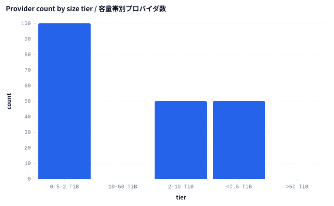
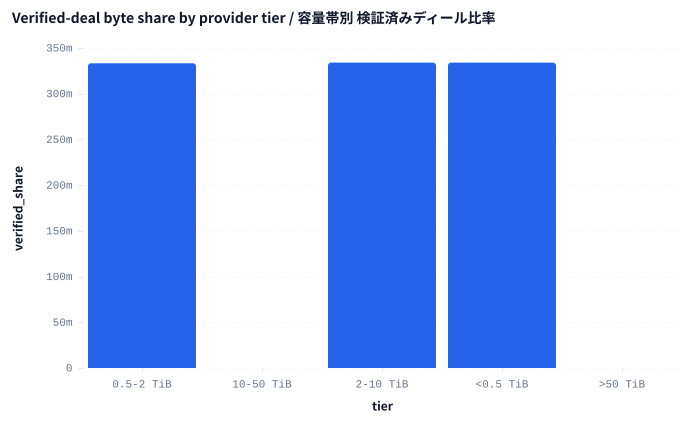
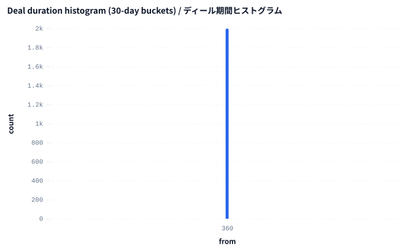

エグゼクティブサマリー
Executive summary
- 本スナップショットでは 200 社 のプロバイダが計 234.4 TiB を 2,000 件のディールに分散して保有しています。
- 上位10社が全容量の 10.7% を占有（上位5社 5.3% / 上位25社 26.7% / 上位50社 53.3%）。
- バイト加重 Herfindahl 指数は 0.0076 で、産業組織論で「高度に集中」と見なされる 0.25 を大きく下回ります。ただし Gini 係数 0.383 は規模の不均衡が無視できないことを示します。
- Filecoin Plus の検証済みディールは全体バイト数の 33.4%。サイズ帯ごとに比率は大きく異なります（§5 参照）。
- ディール期間の中央値は 365 日（P25 365日 / P95 365日）。詳細は §6 を参照。
- 200 providers carry 234.4 TiB across 2,000 deals in this snapshot.
- Top 10 hold 10.7% of all bytes (top 5: 5.3%, top 25: 26.7%, top 50: 53.3%).
- Herfindahl index (byte-weighted): 0.0076 — well below the 0.25 industrial-economics "highly concentrated" threshold, but Gini coefficient 0.383 indicates meaningful inequality of size.
- Filecoin Plus verified deals account for 33.4% of bytes overall; the share is materially different across size tiers (see §5).
- Median deal duration 365 days (P25 365d / P95 365d) — see §6.
1. メソドロジー & データ範囲
1. Methodology & data scope
ソーステーブル: filecoin.deals。1行=1ディール。Filfox / Spacescan API を @chainq/ingest-filecoin で取り込みます。本実行では pnpm seed の合成データ（プロバイダ 200 社 × 計 2,000 件）を使用。メインネット相当の出力で再現するには chainq pull --chain filecoin の結果に差し替えてください。
エンジン: DuckDB（Node v23.7 互換ビルド）。./data の Parquet ファイル群に対しメモリ内ビューを構築。下記5本のクエリは合算 0.04 秒で完了。
期間: start_epoch BETWEEN 0 AND 10000000（epoch は 2020-08-24 22:00:00 UTC からの 30 秒スロット — 用語集参照）。コホート分析以外でのフィルタはなし。
指標の定義: 集中度は Herfindahl（Σsᵢ²、バイト加重）と Gini（バイト質量によるローレンツ曲線の積分）。プロバイダ階層は TiB ベースで <0.5 / 0.5-2 / 2-10 / 10-50 / >50 にバケット化。
Source table. filecoin.deals — one row per protocol deal, ingested from public Filfox / Spacescan endpoints via @chainq/ingest-filecoin. In this run the table comes from pnpm seed's synthetic dataset (2,000 deals across 200 providers); replace with chainq pull --chain filecoin output to reproduce against mainnet.
Engine. DuckDB v23.7-compatible build, in-memory views over Parquet files in ./data. All five queries below ran in under 0.04s combined.
Window. start_epoch BETWEEN 0 AND 10000000 (epochs are 30-second slots since 2020-08-24 22:00:00 UTC — see Glossary). No cohort-level filtering except where noted.
Metric definitions. Concentration via Herfindahl (Σ sᵢ², bytes-weighted) and Gini (full Lorenz integration over byte mass). Provider tiers are bucketed by TiB stored: <0.5 / 0.5-2 / 2-10 / 10-50 / >50.
2. 集中度指標一式
2. Concentration suite
上記はバイト加重（ディール件数加重ではない）です。Filecoin ではストレージコミット量こそが効くからです。エコシステム系ダッシュボードで最頻出なのは top-10 share、HHI は他産業との横比較ができる尺度、Gini は HHI が平準化してしまう裾の不均衡を捕捉する補助指標として併用しています。
The numbers above are byte-weighted (not deal-count-weighted) because storage commitment is the load-bearing variable on Filecoin. Top-10 share is the figure most often cited in ecosystem dashboards; the HHI lets us compare against industries on a unified scale and Gini captures inequality along the tail that HHI smooths over.
| metric | value | note |
|---|---|---|
| top-1 share | 1.07% | share of bytes held by the largest single provider |
| top-5 share | 5.33% | |
| top-10 share | 10.67% | common reference for Filecoin ecosystem health |
| top-25 share | 26.67% | |
| top-50 share | 53.33% | |
| HHI (Herfindahl) | 0.0076 | <0.10 unconcentrated · 0.10-0.18 moderate · >0.25 high |
| Gini coefficient | 0.383 | 0 = perfect equality · 1 = perfect inequality |
3. 上位25プロバイダ
3. Top 25 providers
{kind=link}
3a. 上位25（生の数値）
3a. Top 25 (raw)
| rank | provider | tib_stored | deal_count | share | cumulative |
|---|---|---|---|---|---|
| 1 | f01143 | 2.5 | 10 | 1.07% | 1.07% |
| 2 | f01163 | 2.5 | 10 | 1.07% | 0.00% |
| 3 | f01179 | 2.5 | 10 | 1.07% | 0.00% |
| 4 | f01147 | 2.5 | 10 | 1.07% | 0.00% |
| 5 | f01155 | 2.5 | 10 | 1.07% | 5.33% |
| 6 | f01127 | 2.5 | 10 | 1.07% | 0.00% |
| 7 | f01115 | 2.5 | 10 | 1.07% | 0.00% |
| 8 | f01055 | 2.5 | 10 | 1.07% | 0.00% |
| 9 | f01051 | 2.5 | 10 | 1.07% | 0.00% |
| 10 | f01119 | 2.5 | 10 | 1.07% | 10.67% |
| 11 | f01003 | 2.5 | 10 | 1.07% | 0.00% |
| 12 | f01023 | 2.5 | 10 | 1.07% | 0.00% |
| 13 | f01067 | 2.5 | 10 | 1.07% | 0.00% |
| 14 | f01195 | 2.5 | 10 | 1.07% | 0.00% |
| 15 | f01131 | 2.5 | 10 | 1.07% | 0.00% |
| 16 | f01019 | 2.5 | 10 | 1.07% | 0.00% |
| 17 | f01083 | 2.5 | 10 | 1.07% | 0.00% |
| 18 | f01199 | 2.5 | 10 | 1.07% | 0.00% |
| 19 | f01071 | 2.5 | 10 | 1.07% | 0.00% |
| 20 | f01095 | 2.5 | 10 | 1.07% | 0.00% |
| 21 | f01063 | 2.5 | 10 | 1.07% | 0.00% |
| 22 | f01027 | 2.5 | 10 | 1.07% | 0.00% |
| 23 | f01059 | 2.5 | 10 | 1.07% | 0.00% |
| 24 | f01075 | 2.5 | 10 | 1.07% | 0.00% |
| 25 | f01167 | 2.5 | 10 | 1.07% | 26.67% |
4. ローレンツ曲線と Gini
4. Lorenz curve & Gini
{kind=link}
4a. 容量帯ごとのプロバイダ数
4a. Provider tier distribution

4b. 階層別サマリ
4b. Tier table
| tier | providers | bytes_share | median_tib |
|---|---|---|---|
| <0.5 TiB | 50 | 6.67% | 0.3 |
| 0.5-2 TiB | 100 | 40.00% | 0.6 |
| 2-10 TiB | 50 | 53.33% | 2.5 |
| 10-50 TiB | 0 | 0.00% | — |
| >50 TiB | 0 | 0.00% | — |
5. 検証済みディール (Filecoin Plus)
5. Verified deals (Filecoin Plus)
全体では 33.4% のバイトが検証済みです。階層別に見ると、小規模プロバイダの方が検証済み比率が高い傾向があります（Filecoin Plus はプロバイダごとに割当上限があるため、裾の方に偏りやすい）。
Overall, 33.4% of bytes are verified. The tiering chart shows how the program affects size brackets differently — smaller providers often see a larger verified share because the Filecoin Plus allocation is rate-limited per provider.

6. ディール期間の分布
6. Deal duration distribution
| quantile | days |
|---|---|
| min | 365 |
| P25 | 365 |
| P50 (median) | 365 |
| P75 | 365 |
| P95 | 365 |
| max | 365 |

7. ディール件数上位クライアント
7. Top clients by deal count
provider_diversity = 異なるプロバイダ数 ÷ ディール数。1.0 に近いほど「毎回別のプロバイダに分散して保存」、0 に近いほど「特定のプロバイダに依存」を示します。
provider_diversity = distinct providers / deals. Values near 1.0 indicate a client that spreads each new deal across a new provider; values near 0 indicate concentration on a small set of preferred SPs.
| rank | client | deals | distinct_providers | provider_diversity |
|---|---|---|---|---|
| 1 | f1client1 | 20 | 2 | 0.10 |
| 2 | f1client37 | 20 | 2 | 0.10 |
| 3 | f1client44 | 20 | 2 | 0.10 |
| 4 | f1client48 | 20 | 2 | 0.10 |
| 5 | f1client79 | 20 | 2 | 0.10 |
| 6 | f1client25 | 20 | 2 | 0.10 |
| 7 | f1client30 | 20 | 2 | 0.10 |
| 8 | f1client47 | 20 | 2 | 0.10 |
| 9 | f1client63 | 20 | 2 | 0.10 |
| 10 | f1client88 | 20 | 2 | 0.10 |
8. コホート分析（前半・後半 epoch）
8. Cohort analysis (early vs late epochs)
start_epoch の中央値で前後半に二分割しています。検証済みディール比率や件数が前後半で変動する場合、Filecoin Plus 採用や SP 構成変化の指標になります。合成データではほぼ平坦になるはず。
Splits the deal window into halves on start_epoch. Trends in verified-deal share or deal count between cohorts hint at program adoption changes; flatness here is expected for the synthetic dataset.
| cohort | deals | bytes_tib | verified_share |
|---|---|---|---|
| early | 1000 | 117.19 | 33.4% |
| late | 1000 | 117.19 | 33.3% |
注意
Caveats
Filecoin の epoch は unix 秒ではなく 30 秒スロット。壁時計時刻は (epoch * 30) + 1598306400（GENESIS_TIMESTAMP）で算出してください。
deal_count が少ないのに tib_stored が大きいプロバイダは「大きなピースを少数本ホストしている」タイプ。件数だけでフィルタすると取りこぼします。
pnpm seed のデータは意図的に 200 プロバイダにラウンドロビンで配るため、HHI と Gini はメインネットの実集中度を過小評価します。本レポートは「形」を見るためのものとして読んでください。
§4b の bytes_share は階層合計でほぼ 100% になりますが、シェア計算で浮動小数点の累積誤差により ±0.01% 程度ずれます。
Filecoin epochs are 30-second slots, not unix seconds. Convert to wall-clock with (epoch * 30) + 1598306400 (GENESIS_TIMESTAMP).
A provider with a small deal_count but a large tib_stored is hosting big pieces — filtering by deal count alone misses these.
The pnpm seed dataset deliberately distributes deals round-robin across 200 providers, so HHI and Gini understate real-mainnet concentration. Treat the shape of the report as the deliverable, not the magnitude.
Bytes_share in §4b sums to ~100% across tiers but can drift by ±0.01% due to floating-point accumulation in the share calculation.
用語集
Glossary
Epoch（エポック）: 2020-08-24 22:00:00 UTC 起算の 30 秒スロット。メインネットでは概ね高さ=epoch。
Piece（ピース）: 保存単位。メインネットのセクターは通常 32 GiB か 64 GiB。複数 piece は集約により 1 sector に詰められる。
Verified deal（検証済みディール）: Filecoin Plus 制度の対象ディール。SP は quality-adjusted power が 10 倍、クライアントは保存料金が割引される。
HHI（ハーフィンダール指数）: Σsᵢ²。1/N（一様分布）が下限、1 が独占。米国 DOJ ガイドラインでは <0.10 が無集中、>0.25 が高集中。
Gini（ジニ係数）: ローレンツ曲線に基づく不平等指数。0 = 完全平等、1 = 完全寡占。
TiB: テビバイト、2⁴⁰ バイト ≈ 1.0995 × 10¹² バイト。TB（10¹²）とは別物。
Epoch. 30-second slot since 2020-08-24 22:00:00 UTC. Mainnet height ≈ epoch.
Piece. A storage unit; mainnet sectors are typically 32 GiB or 64 GiB. Multiple pieces can be packed into one sector via aggregation.
Verified deal. A deal under the Filecoin Plus program; receives 10x quality-adjusted power for the SP and discounted storage for the client.
HHI (Herfindahl-Hirschman Index). Σ sᵢ² where sᵢ is share. 1/N (uniform) is the floor; 1 is monopoly. <0.10 is unconcentrated, >0.25 is highly concentrated under US DOJ guidelines.
Gini. Inequality index over the Lorenz curve. 0 = everyone equal; 1 = one entity owns everything.
TiB. Tebibyte, 2⁴⁰ bytes ≈ 1.0995 × 10¹² bytes. Not to be confused with TB (10¹²).
このレポートの再現手順
Reproducing this report
```bash
# 1. 実データの取り込み（RPC不要、公開アーカイブから）:
chainq pull --chain filecoin --from 4500000 --to 5000000
# 2. レポート生成:
pnpm exec tsx scripts/filecoin-demo.ts
# 3. 開く:
open docs/reports/02-filecoin-concentration.html
```
パイプライン（裏で AI エージェントが叩く MCP コール）:
1. chainq_describe("filecoin.deals") — スキーマ・サンプル・落とし穴。
2. chainq_metric("filecoin_provider_storage", { dimensions: ["provider"], start_epoch, end_epoch }) — 全件・検証済みの2バージョン。
3. chainq_query("SELECT (end_epoch - start_epoch) ...") — 期間分布。
4. chainq_query("SELECT client, COUNT(*) ...") — クライアント多様性。
5. chainq_chart_render を5回（top-25 / lorenz / tiers / verified-by-tier / duration）。
6. chainq_report({ ..., locale: "both", format: "html" }) — このファイルそのもの。
```bash
# 1. Pull a real Filecoin window (RPC-free, public archive):
chainq pull --chain filecoin --from 4500000 --to 5000000
# 2. Run the report pipeline:
pnpm exec tsx scripts/filecoin-demo.ts
# 3. Open the output:
open docs/reports/02-filecoin-concentration.html
```
Pipeline (MCP calls the agent makes under the hood):
1. chainq_describe("filecoin.deals") — schema + sample queries + gotchas.
2. chainq_metric("filecoin_provider_storage", { dimensions: ["provider"], start_epoch, end_epoch }) — total + verified variants.
3. chainq_query("SELECT (end_epoch - start_epoch) AS duration_epochs FROM filecoin.deals") — duration distribution.
4. chainq_query("SELECT client, COUNT(*) AS deals, COUNT(DISTINCT provider) ...") — client diversity.
5. Five chainq_chart_render calls for top-25 / lorenz / tiers / verified-by-tier / duration.
6. chainq_report({ ..., locale: "both", format: "html" }) — this file.
参考資料
References & further reading
- Filecoin 仕様 [Deals & sectors](https://spec.filecoin.io/#section-systems.filecoin_markets) — プロトコルの正典。
- Filfox provider explorer: https://filfox.info/ — 個別プロバイダの数字の突き合わせに。
- 米国 DOJ Horizontal Merger Guidelines — §2 で参照した HHI 閾値の出典。
- chainq docs/COMPARISON.md — chainq と Dune の使い分け。
- Filecoin spec, [Deals & sectors](https://spec.filecoin.io/#section-systems.filecoin_markets) — official protocol semantics.
- Filfox provider explorer: https://filfox.info/ — sanity-check individual provider numbers.
- DOJ Horizontal Merger Guidelines — source for the HHI thresholds cited in §2.
- chainq docs/COMPARISON.md — when to use chainq vs Dune.